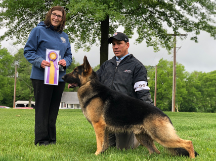

Event Results
May 11 & 12, 2019
Specialty Shows hosted by The German Shepherd Dog Club of St. Louis, Inc.
Saturday 5/11/19 AM - Judges name: Ms. Bo Vujovich Show am NLC: Beginner Puppy Saturday PM
Saturday 5/11/19 PM - Judges name: Mrs. Candee Foss Show pm NLC: Beginner Puppy Sunday AM
Sunday 5/12/19 AM
Judges name: Ms. Christina M. Halliday
NLC: Beginner Puppy
 |
| Saturday 5/11/19 PM Judge: Candee Foss Best of Breed BOF CH Faithrock's Wyatt Earp V Tin Roof RN TC Sire: RBIS GCHB Class Act's Shot Through The Heart Windfall-Hillside RN CGC TC "Jovi" Dam: FaithRock You've Got A Friend "Kelly" Breeder: Terry and Larry Rock and Rita Rooney Owner: Laura & Tony Marracco & Terry Rock |
 |
| Saturday 5/11/19
PM Judge: Candee Foss Winner's Dog Von Loar Red Rum Gomez of Karizma Sire: GCH Karizma's Montego Bay Von Loar Dam: Karizma's Galla Von Loar Breeders/Owners: Miguel Gomez & Carlos Arguimbau |
 |
| Sunday 5/12/19 AM Judge: Christie Halliday Best Of Breed Faithrock's Maverick Sire: RBIS GCHB Class Act's Shot Through The Heart Windfall-Hillside RN CGC TC "Jovi" Dam: FaithRock You've Got A Friend "Kelly" Breeder: Terry and Larry Rock and Rita Rooney Owner: Linda Van Vickel and Terry Rock |
 |
| Sunday 5/12/19 AM Judge: Christie Halliday Winner's Bitch Luzak's Jyn of Rogue One Rivendell Sire: GCH Karizma's Malawi Kaleef Von Loar RN PT CGC Dam: Rivendell-Tebe Nobe Here I Come PT Breeders: Scott Leitz & Jennifer & Paul Root Jene & Isabelle Dupzyk Owner: Elizabeth Wilkerson & Jennifer & Paul Root |